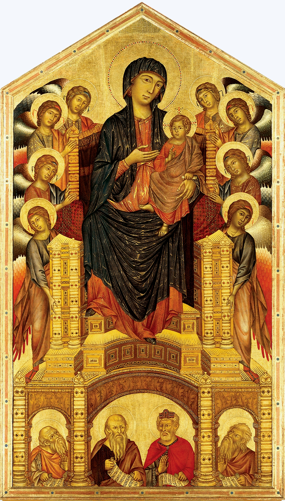

欧洲中世纪的绘画超简史
文章目录
原本是在写乔托的解析笔记，对乔托创作湿壁画之前的欧洲中世纪绘画方式进行图文查阅，渐渐积累一些，觉思单独成文也未尝不可，故剥离之，成此文。
对于乔托的成就，有一条赫赫在前：将湿壁画发扬光大，为文艺复兴埋下了启蒙的种子。 在乔托对壁画的革新之前，欧洲中世纪的绘画历经沧桑，探索各种方式表达“信仰”这一永恒的主题，常见的有马赛克镶嵌画、壁画、蛋彩画、彩绘玻璃画[1]，还有少量的羊皮纸画、挂毯画（如果可以归属为画作）。
插播另一文快捷入口：欧洲中世纪的建筑超简史
1、马赛克画Mosaics
马赛克画呈现的颜色鲜艳，主要用有色的玻璃或石块镶嵌到墙面，如果不刻意破坏是能够长久保存，但是很难做到细腻表达人物。
意大利纳文塔曾是拜占庭时期西罗马的首都，马赛克画的艺术巅峰自然在此孕育生长。 纳文塔圣维托教堂Basilica of San Vitale建于6世纪（526年~547年）[2]，现存着精美的马赛克画，其中西罗马皇帝查士丁尼一世Justinian和皇后狄奥多拉Theodora为主角的画最为完美（图1~图2）。虽然马赛克的表现方式有些许粗粝，但大大小小马赛克合理地排列，仍然能感受到皇冠的精致（图3），对皇权肃然起敬。
图1. 查士丁尼一世Justinian与Maximianvs一众
.jpg) 图2. 狄奥多拉Theodora与侍从们
图2. 狄奥多拉Theodora与侍从们
_v2_meitu_3.jpg) 图3. 马赛克的粗粝与精致
图3. 马赛克的粗粝与精致
马赛克画在中世纪初期蓬勃发展，日趋华丽带来成本的压力。 在圣维托教堂里，无数块半透明玻璃后面衬着的是小金箔片，以此达到闪闪发光的效果。如此高昂的建造成本是小教堂无法承受的，所以大部分小教堂在室内墙面上便使用壁画装饰。
2、壁画Maral
壁画是一类画的统称，结合本文简介对象的范围是中世纪，so focus on that time. 中世纪常见的壁画[3]有两类，干壁画Fresco secco / Secco、湿壁画Buno fresco / Fresco bunon。 干壁画是在干燥的石膏上作画，颜料浮在石膏上，暴露在空气中过久会出现各种问题，比如颜料易成片剥落、色彩氧化，但同时也有一定的优势，就是损坏后易修复。弊大于利的结果是现存较完好的中世纪干壁画很稀少。
意大利Galliano的教堂Basilica di San Vincenzo（约1007年）虽然未幸免遭受时间侵蚀，也许现在的模样不完整（图4~图5），却丝毫不影响她在小镇居民心中信仰之光。
 图4. 被时间洗礼的干壁画（Basilica di San Vincenzo）
图4. 被时间洗礼的干壁画（Basilica di San Vincenzo）
 图5. 不完整却完美的干壁画（Basilica di San Vincenzo）
图5. 不完整却完美的干壁画（Basilica di San Vincenzo）
湿壁画较之干壁画脾性就稳定多了，画匠用清水调和颜料，涂画到湿的石膏上。在干透的过程中颜料慢慢涌入石膏内部，经过奇妙的化学反应与石膏融为一体。最终湿壁画完稿后色彩鲜亮，持久且抗氧化。
从技术上常将湿壁画的物理结构分为三层[4]：
- the arriccio，最贴近墙体的石膏层，由粗质石灰、沙子和水后平涂到墙面上
- the sinopia，石膏干后，用红色颜料勾勒轮廓；后期此步骤也改进用定点式确定轮廓
- the intonaco，最后就是最关键的最细腻的石灰层，在湿润的石灰层上涂颜料
湿壁画较干壁画的关键突破在于让颜料渗入墙体内部，靠的是石灰与水与空气之间奇妙的化学反应[4]：
- calcination of limestone in a lime kiln: CaCO3 → CaO + CO2
- slaking of quicklime: CaO + H2O → Ca(OH)2
- setting of the lime plaster: Ca(OH)2 + CO2 → CaCO3 + H2O
关于湿壁画艺术的讲解，推荐碎片先生的节目《文艺复兴在意大利05–渗入墙体的艺术：湿壁画》。
湿壁画对环境有一定限制，适合创作室内画并存留在干燥的地区，比如大部分意大利城市，而威尼斯或潮湿寒冷的北欧，湿壁画易受潮脱落。同时，湿壁画需要在灰泥未干时创作，大约24小时时长，只有技艺高超的画匠才能胜任速度和画面的双重考验。
当当当当，此处请出湿壁画史上的开山之作，意大利的亚西西圣方济各圣殿Basilica of Saint Francis of Assisi（ 1228年~1253年），乔托（虽然存在少部分争议）在此圣殿中生动描绘了方济各的传道故事，用25幅场景赞美他的一生，包括向鸟儿布道（图6）、向霍诺里乌斯三世布道（图7）。 细细看每个作品中人物表情，已经从中世纪生硬的宗教画中挣脱，微皱的双眉透出霍诺里乌斯三世正认真聆听，其他人有的托腮、有的抱臂，有的举着手似乎表示认同布道的教义（图8）。
亚西西圣方济各圣殿的Upper Church在乔托笔下熠熠生辉，而更叹为观止的是斯克洛文尼礼拜堂Scrovegni Chapel，又称为竞技场礼拜堂Arena Chapel。
图6. 圣方济各向鸟儿布道
图7. 圣方济各向霍诺里乌斯三世布道
图8. 圣方济各向霍诺里乌斯三世布道（局部）
蛋彩画，另一音译名为坦培拉，它的绘画技法与湿壁画相似，是将颜料调和后涂到石膏上；差异在于蛋彩画的调和介质是蛋黄、牛奶或植物胶等粘稠性物质，而湿壁画直接用清水调和颜料。
蛋彩画的核心技术可应用到不同的绘画材料上，如木板、画布、墙壁。 木板蛋彩画在中世纪后期常结合金箔底面，打造出各种样式的祭坛宗教画，表达出金光灿灿的信仰。根据尺寸差异可分类为单屏祭坛画、多联屏祭坛画。
意大利佛罗伦萨乌菲兹美术馆Uffizi Gallery有一个展馆中陈列了三幅同一主题的单屏祭坛画**《圣母与圣子》**，图9~图11作者分别是杜乔Duccio di Buoninsegna、契马布埃Cimabue、乔托Giotto，每幅作品不可去论高低上下，一起欣赏。
图9. 杜乔，Rucellai Madonna，1285-1286年，290 x 450cm
 图10. 契马布埃，Santa Trinita Maestà，1280-1290年，385 × 223cm
图11. 乔托，Giotto，1306-1310年，204 x 325 cm
木板蛋彩画中多联屏祭坛画的作品也是不胜其数，通常会围绕圣经中某个核心主题绘制多块木板画，有些木板画设计为可闭合，以在不同节日展示不同画面。中世纪祭坛画的主题相对范围比较固定，画面仅突显人物，肃穆有余温情不足。 典型中世纪多联屏祭坛画如杜乔的圣母子（图12）、Pietro的圣母子（图13），个人比较喜欢皮耶罗Piero della Francesca的极简风祭坛画（图14）。
 图12. 杜乔, Madonna and Child with saints polyptych, 1311-1318年
图12. 杜乔, Madonna and Child with saints polyptych, 1311-1318年
 图13. Pietro Lorenzetti，Arezzo Polyptych，1320年，Santa Maria della Piev
图13. Pietro Lorenzetti，Arezzo Polyptych，1320年，Santa Maria della Piev
图14. 皮耶罗，Polyptych of the Misericordia，1445-1462年，Sansepolcro, Museo Civico
 图15. 凡·艾克兄弟，The Ghent Altarpiece，油画，1432年，461cm * 350cm
图15. 凡·艾克兄弟，The Ghent Altarpiece，油画，1432年，461cm * 350cm
图16. 乔尔乔内，Castelfranco Madonna，油画，1504年，200 * 144cm，Cathedral of Castelfranco Veneto
中世纪的艺术实体就是教堂，而教堂中不可缺少的是光。最初限于建筑技术罗马式教堂室内多是偏暗，中世纪对墙、柱、拱等等的创新，使得艺术家们在设计教堂时，有更多的面积可以嵌入窗户。纯透明玻璃下的自然光太过normal，一旦绘上彩色玻璃，光的照射下尽显天堂美好。
常见有两种形式的彩绘玻璃窗，一种是上下垂直结构，英格兰温彻斯特座堂Winchester Cathedral（1079年~1093年）的彩绘窗气势磅礴，教堂东面、西面玻璃窗（图17~图18）仅占整座教堂窗户很小的一部分，因为这个教堂东西长约160米，南北两面有更丰富的彩绘窗[6]。
 图17. East Window，Winchester Cathedral Photo: Roger Buchanan
图17. East Window，Winchester Cathedral Photo: Roger Buchanan
.jpg) 图18. West Window，Winchester Cathedral
图18. West Window，Winchester Cathedral
 图19. Rose Sud，Notre-Dame Cathedral
图19. Rose Sud，Notre-Dame Cathedral
图20. Rose Sud（detail），Notre-Dame Cathedral
挂毯的制作成本很高，可以用于制作精美图案，但面对无规则的人物形状就难以施展。
最典型的作品是贝叶花毯The Beyeax Tapestry（70m * 0.5m，1066年），它描绘的是历史事件the Norman Conquest of England，整长70米长卷，目前最后一节仍遗失，留存62米[9]，用连环情节绘制完这场两年的征战（图21~图22），623位人，55条狗，202只马，49棵树，41艘船，还有页眉页脚上装饰的马和鸟（与清明上河图异曲同工）。
图21. 贝叶花毯上的威廉公爵Willelm:DVX
图22. 超长贝叶花毯现场展
参考： [1] 绘画类别，http://faculty.evansville.edu/rl29/art105/sum04/art105-6.html [2] 圣维塔教堂 https://en.wikipedia.org/wiki/Basilica_of_San_Vitale [3] Mural Painting as a Medium: Technique, Representation and Liturgy, [https://www.academia.edu/8526688/Mural_Painting_as_a_Medium_Technique_Representation_and_Liturgy [4] 湿璧画，https://en.wikipedia.org/wiki/Fresco#cite_note-3 [5] Cimabue, Giotto and Duccio- A comparison of three Madonnas，http://arthistoryblogger.blogspot.com/2012/09/cimabue-giotto-and-duccio-comparison-of.html [6] Medieval Glass: The Influence of Three Great Bishops，https://www.winchester-cathedral.org.uk/wp-content/uploads/Three-Great-Bishops-with-Illustrations.pdf [7] 巴黎圣母院花窗，http://www.therosewindow.com/pilot/Paris-N-Dame/table.htm [8] 巴黎圣母院南花窗，http://www.notredamedeparis.fr/la-cathedrale/linterieur/vitraux/rose-sud/ [9] 贝叶花毯将于2020年首次在英国展出，https://www.lonelyplanet.com/news/2018/01/17/bayeux-tapestry-display-uk/